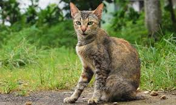
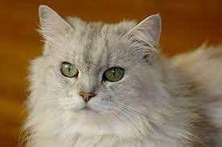
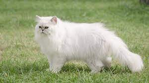
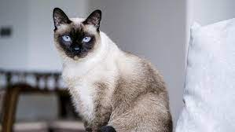
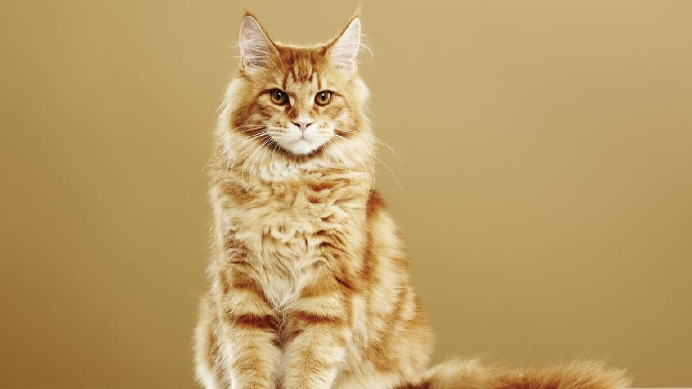
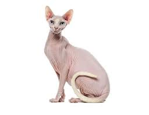

| Fotoku | Definisiku |
|---|---|
|  |
Nama : Kucing Kampung Ras : Merupakan kucing asli Indonesia Asal : Asli dari negara Indonesia |
|  |
Nama : Kucing Persia Ras : Merupakan kucing ras yang dikembangkan di Indonesia Asal : Asli dari negara Persia yang sekarang pecah menjadi negara Turki & Iran |
|  |
Nama : Kucing Anggora Ras : Merupakan kucing ras yang sekarang banyak dan hampir banyak yang kesuliatam membedakan antara Anggora dan Persia Asal : Asli dari negara Turki yang ditemukan pada abad ke 16 |
| Fotoku | Definisiku |
|---|---|
|  |
Nama : Kucing Siam Ras : Merupakan kucing ras oriental yang sangat merebak di Thailand Asal : Muncul pertama kali di Australia tahun 1890 |
|  |
Nama : Kucing Maine Coon Ras : Merupakan kucing domestik yang paling besar Asal : Berasal dari negara Amerika, Memiliki sifat lincah |
|  |
Nama : Kucing Sphynx Ras : Merupakan kucing ras yang sangat unik karena hampir tidak memiliki bulu Asal : Berasal dari negara Australia, Uniknya lagi Kucing Sphynx juga menjadi satu-satunya jenis kucing yang memiliki kelenjar keringat |